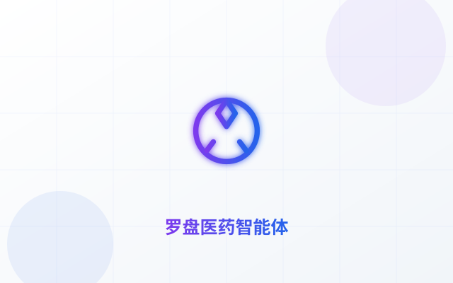
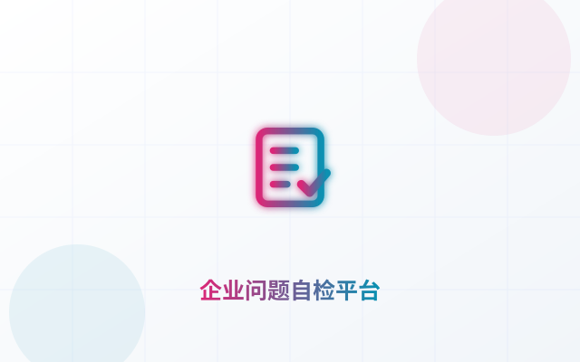

PERSONAL PORTFOLIO · AI 应用方向
AI 应用开发之路 – 郑孟瑶
AI 应用工程师 & 全栈开发者
1.5 年大模型应用开发经验，专注 AI 应用落地与全栈开发，8 个上线项目全部可演示，覆盖 RAG / Agent 编排 / 多模态 / Text2SQL 全链路。
8+实战项目
36+API 接口
100%功能可演示
24h响应反馈
开发路上的得力工具 🛠️
每个工具背后都有选型的故事和踩坑的经历
PythonFastAPI
LangGraphDeepAgents
Next.jsVue
ReactOpenAI
ClaudeDocker
项目作品集
我在 AI 应用开发、Web 技术和工具创建方面的实践成果


法眼 · AI 合同智审平台
数据驱动规则引擎（keyword / regex / absence / custom 四种模式、11 条内置规则）叠加 LLM 语义研判，支持审批决定、回写评论、Markdown 导出与全程审计日志。



 旗舰
旗舰
技术栈
掌握的现代技术栈和工具，持续学习和实践最新技术
前端技术
平均 72HTML / CSS / JSAdvanced · 78
独立完成交互界面与响应式布局，注重细节与可访问性
VueAdvanced · 72
阅读并改造多个 Vue 项目，熟悉组件与状态管理
Next.jsIntermediate · 68
了解 App Router 与 SSR，跟进参考项目学习
后端技术
平均 84PythonExpert · 90
主力开发语言，8 个上线项目全部基于 Python 构建
FastAPIExpert · 85
36 个 RESTful API 设计实战，Pydantic 与依赖注入熟练
SQL 数据库Advanced · 80
SQLite WAL/FTS5、MySQL 多表关联与查询优化实践
AI 集成
平均 80LangGraph / DeepAgentsAdvanced · 80
多 Agent 编排、子代理上下文隔离、HITL 中断实战
RAG 检索增强Advanced · 78
FTS5 中文二元分词、Qdrant + ES 双索引、bge embedding
LLM 应用Advanced · 82
多链路故障降级、Text2SQL、意图路由与防幻觉校验
云服务
平均 72DockerAdvanced · 72
Compose 多服务编排、偏移端口部署、数据卷持久化
GitExpert · 85
分支管理、SSH 免 token 推送、多副本代码同步策略
Linux 部署Intermediate · 65
内网服务器运维、uv 虚拟环境、后台服务管理
项目服务
基于真实项目经验提供的开发服务，满足不同业务场景需求
按项目计费
RAG 知识库搭建
文档导入、自动分块、全文检索与带引用问答的完整 RAG 知识库，RAG 智能智库同款，支持 LLM 增强与无 Key 演示双模式。
文档入库全文检索引用问答中文分词优化双模式
咨询服务
按项目计费
AI 智能体开发
基于 LangGraph / DeepAgents 的行业智能体：数据库对接、工具调用、多 Agent 编排与故障自动降级，罗盘医药同款架构。
多 Agent工具调用数据库对接联网搜索自动降级
咨询服务
订阅制
数据看板与问数系统
经营数据看板与 NL2SQL 问数系统：自然语言查数据、图表可视化、经营指标统计，运营助手与问数 ChatBI 同款。
自然语言查数数据看板指标统计图表导出持续迭代
咨询服务
学习历程
从后端入门到 AI 应用落地，一步一个脚印
2026-01
前端与编程基础
系统学习 HTML / CSS / JavaScript 与 Vue，完成第一个响应式页面，建立前端工程化思维。
学习2026-03
Python 后端进阶
转向 Python 后端，掌握 FastAPI 与 RESTful API 设计，完成第一个 FastAPI + SQLite 全栈项目。
项目2026-05
多 Agent 框架实战
学习 LangGraph / DeepAgents，完成 CEO→CTO→CODER 多 Agent demo 与 HITL 中断、子代理上下文隔离等十大组件实践。
学习2026-07
RAG 检索增强落地
攻克 SQLite FTS5 中文检索难题（二元分词双侧展开），完成 RAG 智能智库与 Qdrant + ES 双索引实践。
项目2026-09
多项目并行实战
电商小二智能客服、AI 合同审批、罗盘医药智能体、企业问题自检平台四个项目并行推进，全部上线可演示。
成就2026-10
四合一融合工作台上线
将四个独立项目融合为单端口工作台：36 个 API、LLM 双链路无 Key 自动降级，代码开源至 GitHub 并云端部署。
成就